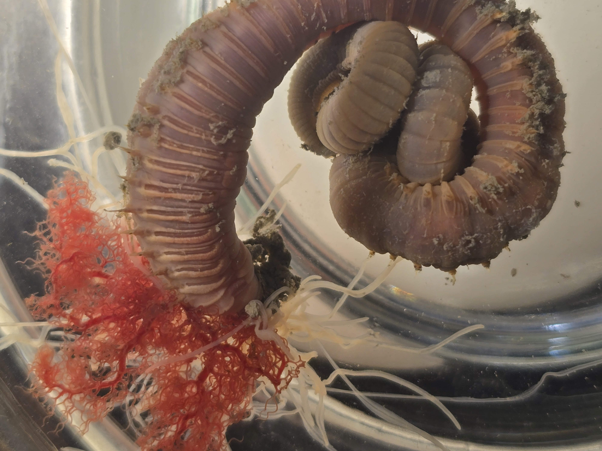
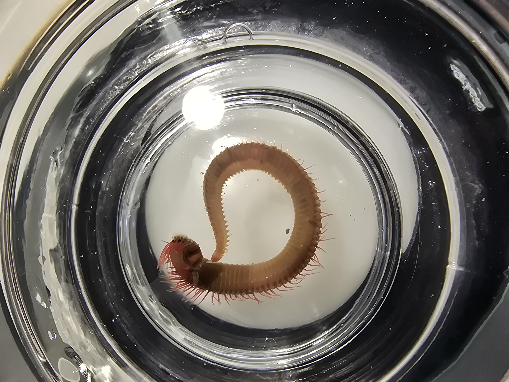

Studying Sea Creatures
If you discovered my SCUBA page, you have probably seen all the photos I have taken during dives. What I haven't gotten to mention is my time studying marine life in the lab. In the fall of 2024 I took a class called Invertebrate zoology, which quickly became my favorite class of college and some of my fondest memories. I learned to classify invertebrates and a large portion of the class we studies marine macroinvertebrates including corals, horseshoe crabs, sea stars, aquatic flatworms, and sea urchins.
I had the privalege to go on a class trip to the Virginia Institute of Marine Science (VIMS) where I got to observe worms, urchins, and crabs, and more up close. We dredged the bottom of an inlet and collected samples manually using a bucket and a shovel. From there we got to use VIMS state of the art facilities where they pull water straight from the chesapeake into labs and holding tanks. It was truly an incredible experience. I hope to continue to study and protect marine life for years to come.




